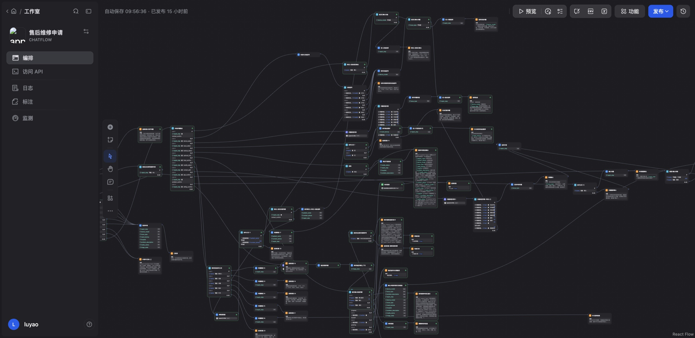
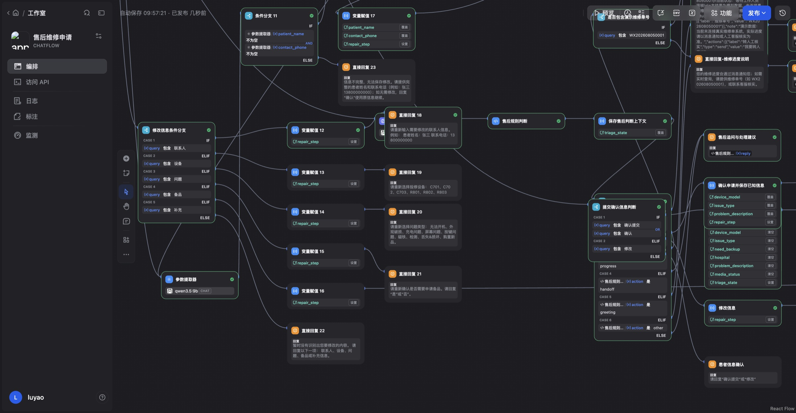

体外售后
维修智能体
从业务流程到可运行的 AI 应用原型
医疗设备售后 · 患者侧对话
先问清，再给下一步
全链路、角色和操作边界
对话、卡片和用户确认
知识、规则与多轮测试
这个项目是干什么的，
我做了什么
源于医疗设备售后场景，面向患者使用的体外设备。我的工作从业务资料和服务流程开始，延伸到知识整理、患者交互、Dify 工作流与 React 卡片原型。
梳理维修链路、设备差异与人工边界，把散落资料整理成一致的问答与规则。
设计补问、申请、确认、修改和异常出口，让用户知道当前需要做什么。
借助 AI 辅助开发实现规则与前端，通过分层测试定位问题并回归。
真实业务背景
可运行的概念验证
问答、故障引导、维修申请和人工入口已形成原型。维修单采用模拟数据，支付、物流和真实人工接管不等于已接入。
知识库 + Python 规则 + React / SSE
患者只说了
“充不进去电”
“充不进去电，
我要怎么办？”
患者描述的是感受和现象，系统需要的是设备对象、型号、异常表现与处理条件。
描述不完整
体外充电器，还是给体内设备充电？不同对象不能使用同一条回答。下一步不明确
继续排查、申请维修、购买配件，还是联系工作人员？需要明确去向。服务不止一个环节
审核、备品、寄件和费用相互关联，回答局部问题也要理解后续流程。一次售后，
中间要经过谁
患者看到的是一次售后，背后却是多方协作。AI 可以理解与解释，但不能替代工作人员作维修判断，也不能凭对话生成支付或物流事实。
反馈排查结果
选择备品需求
处理费用事项
归还借用备品
澄清特殊诉求
确认服务安排
协调异常
协调退款
记录审核结果
维修与费用状态
实际完结状态
判断服务去向
让患者确认
提供入口
提示下一步
业务关系示意。当前原型重点覆盖前段对话与申请；下游交易、物流和真实维修状态需业务系统接入。
从提交到拿回设备，
中间有这些环节
把零散状态还原为患者可以理解的阶段，再明确每一阶段由谁推进、患者是否需要行动。
申请与审核
描述问题
确认信息
等待审核
备品安排
按审核安排
处理押金事项
接收备品
寄问题产品
查看寄件指引
寄出设备
补充物流
检测与维修
工作人员检测
确认实际费用
执行维修
产品寄回
查看寄回信息
签收设备
确认使用情况
归还备品
借用过才进入
按指引返还
确认收回
退款与完结
按实际押金情况
查询退款结果
结束服务
连续服务，不是状态堆叠
患者需要知道“现在是谁在处理”和“我下一步要做什么”，而不是记住后台所有状态名称。
条件分支，不是统一话术
有没有备品、有没有可退押金，会影响后续阶段。具体动作以业务状态为依据。
有备品和没备品，
走的路不一样
备品需求由患者表达，能否提供及实际安排由工作人员审核。把选择、审核与后续行动分开，避免 AI 把“需要”说成“已安排”。
不需要备品
不进入借用备品及归还备品的路径。
需要备品，经审核安排
退款依据实际押金与返还处理结果，不由模型自行承诺。
后台的状态，
要说成患者能听懂的话
设计状态表达时，我将信息拆成三件事：发生了什么、是否需要行动、接下来由谁推进。
| 业务状态 | 患者侧表达设计 | 患者下一步 |
|---|---|---|
| 等待审核 | 申请已收到，正在等待工作人员审核。 | 查看申请信息；如有问题联系客服。 |
| 备品已签收 | 请先确认备用设备能够正常使用。 | 确认后按指引寄出问题产品。 |
| 检测完成，待费用处理 | 检测已完成，请查看工作人员确认的费用信息。 | 查看费用；通过业务入口处理或咨询。 |
代表性状态表达方案，不代表这些下游状态都已接入当前原型。金额、状态与原因均须来自真实业务结果。
哪些事让 AI 做，
哪些不让
职责分清楚，才能避免把“说起来合理”当成“真的能做”。
模型负责理解
识别意图与现象，提取设备信息，理解同义表达，用知识回答问题。
规则负责分流
按已知事实、适用条件与当前阶段，决定补问、回答、申请或人工入口。
业务系统负责执行
审核、维修结论、费用、物流与退款；AI 不能编造结果或改变权限。
我把要确认的信息
都做成了卡片
不是把所有业务页面改成聊天，而是根据任务复杂度与操作风险，选择更合适的承载方式。
聊天文本
表达现象、澄清问题、解释规则。让用户先用自己的语言说，不要求先理解表单分类。
“充电器的灯有什么变化？”
结构化卡片
申请摘要、状态说明和人工入口。重要信息集中核对，减少在长对话里翻找。
设备 · 问题 · 联系方式
修改信息 / 确认提交
业务页面
支付、复杂详情等需要权限和校验的动作，保留成熟业务入口，不由语言模型代办。
交易、审核、物流
系统接入设计，非已实现声明
先问清楚对象和型号，
再回答
防止将体外设备问题套用到体内充电场景。
限定知识适用范围，不把一个型号的方法推广给所有设备。
结合表现、原装配件和已尝试步骤，再给适用指引。
申请分几步，
中间都能回头确认
先明确维修意愿，再收集必要信息。已有设备与故障信息继续使用；选填内容可以跳过，最终由患者核对并确认。
核对姓名与电话
复用已知信息
患者选择是或否
医院、描述、附件
修改或确认提交
必填与选填分开
- 必填：患者姓名、联系电话、设备、问题类型、是否需要备品。
- 选填：手术医院、问题描述、图片或视频。
- 顺序：备品选择放在设备与问题之后，让用户先说明发生了什么。
请核对本次申请
展示字段结构，不是可提交表单；原型维修单为模拟数据。
填错了能改，
不想填了能退
回到具体字段
从汇总页选择需要修改的内容，再进入对应输入阶段，不必整张申请重填。
保留当前任务
型号无法识别或问题类型不匹配时说明要求，不直接跳到下一阶段。
不给虚假承诺
申请填写阶段的退出与已提交维修单的撤销不同；人工入口不声称已经接通。
“能继续”之外，
还要让用户知道“怎么改、怎么停”。
同一个问题，
四份资料答案不一样
问题并非资料不足，而是同一件事分散在不同材料中。问答表描述“怎么解释”，导图描述“怎么走”，旧版又保留了流程细节。
设备问答表
型号、现象与适用回答。
业务导图
判断条件与处理去向。
补充规则
修正导图、统一人工边界。
旧版流程问答
保留有效申请与寄件知识。
直接全部导入
同一问题可能召回不同口径；回答正确片段，也可能引向错误流程。
先整理，再交给系统
确定来源优先级，区分知识与规则，停用旧版本，保留追溯资料。
以“设备丢失”为例：
答案和去向都得改
以“设备丢失／购买”为例：光改回答还不够，还要改它在流程里的去向。
导向维修申请
不自动进入维修申请
“先找找”不强推购买
回答和路径都要正确
内容治理
保留适用型号和处理条件；最新设备资料优先，旧版仅迁移兼容的流程问答。
版本治理
v2.0 作为统一上传版本。旧资料留作追溯，不与当前版本同时提供相互冲突的回答。
哪里用模型，
哪里用规则
Dify 组织对话与节点，Python 规则决定动作，知识库提供依据，React 将结果呈现为文本或卡片。
先识别不应由售后自动处理的问题
正在填写时继续既有步骤
意图、型号、现象及处理条件
结合上下文选择下一动作
知识回答
按资料组织回复；关键操作内容走受控输出。
任务与入口
补问、申请填写、客服入口或其他引导。
前端呈现
SSE 流式文本，或结构化确认／状态／人工卡片。

模型把型号例外读反之后，
我改了分工
测试记录中，回答模型曾把组合键步骤的型号例外读反，也曾改写已确定的操作口径。关键限制不该依赖模型每次都恰好说对。
资料正确，转述却失真
检索命中不代表最终回答正确。型号排除条件可能在生成阶段被改写。
关键内容受控输出
操作类条目由规则层输出已整理原文；模型继续承担自然表达理解。
为什么不只加提示词？
同类错误已在生成中出现，不能只以一条更强措辞代替约束。
保留什么灵活性？
同义表达、条件提取与普通知识解释仍由模型参与。
怎样确认修复？
复验触发案例，检查输出中的型号限制和后续动作。
依据：2026-09-12 交接记录中的模型改写问题与修复说明。业务口径一致不等于专业安全审查已经完成。

测试分成四层，
动作对不对是重点
在确定输入下，是否得到正确动作和状态。
问题是否找到适用条目，是否保留型号与条件。
短回复、补充信息、拒绝和修改是否正确承接。
卡片能否呈现、操作能否继续、模拟范围是否明确。
每条用例写清预期动作
每个失败案例，
都留了档
以下为项目交接记录中的验证结果，按测试层与批次呈现，不将复测次数相加包装成一次全通过。
确定性分支断言
仅代表该组规则测试通过。
暴露问题，再修复
后续复测及终测记录通过。
小样本 Top1 命中
不能外推整体准确率。
语义层不稳定
字段漏提取、非法意图值、短回复误分类。修复从日志定位到提取与规则衔接处，补充有效信息恢复与短答处理。
回答层改写约束
型号例外和操作口径被改写。关键步骤改为规则直出，并针对原失败场景复验。
来源：交接文档与历史调优记录。此作品集制作没有重新执行完整回归；证据索引见附录。
这个原型现在能做什么、
还不能做什么
可以运行
- 知识问答与故障引导
- 规则分流与申请填写
- 确认、状态和人工入口卡片
- 本地前端与 Dify 连接
可以演示
- 维修单与提交结果
- 部分进度数据
- 卡片中的业务结果
- 不作为真实交易凭证
还需建设
- 维修与审核后台
- 支付、物流、退款
- 人工客服真正接管
- 真实用户与安全验证
做完回头看，
几个关键判断
从资料到判断
知识整理不是换一种格式，而是明确条件、来源和下一步。
从对话到任务
好的回答之外，还需要确认、纠错和退出这些交互支点。
从生成到验证
让模型理解，让规则约束，用失败案例检查两者的接缝。
范璐垚 / 业务理解 · 产品设计 · AI 应用实践
以下附录保留业务矩阵、规则追溯和测试口径，供深入阅读。
代表性状态与患者操作
| 阶段 | 患者看到什么 | 可以做什么 | 实现范围 |
|---|---|---|---|
| 填写申请 | 待补充信息 | 输入、修改、退出 | 对话原型 |
| 汇总确认 | 结构化申请摘要 | 修改、确认提交 | 卡片原型 |
| 申请已提交 | 单号与当前状态 | 查看结果、咨询 | 模拟业务数据 |
| 备品签收 | 检查备品与寄件提醒 | 按业务指引处理 | 服务设计 |
| 费用处理 | 实际确认的费用 | 业务页面处理、咨询 | 待业务系统接入 |
| 退款与完结 | 系统确认的结果 | 查看、必要时咨询 | 待业务系统接入 |
仅取代表状态，不以表格行数表示全状态覆盖。申请提交后的变更不能沿用填写阶段的修改与退出权限。
来源、回答、动作的
对应关系
| 主题 | 整理依据 | 系统处理 |
|---|---|---|
| 设备丢失／购买 | 最新设备问答＋补充规则 | 澄清后引导售后联系，不直接进入维修申请。 |
| 特殊优惠与议价 | 人工介入规则 | 先说明现有政策，询问是否需要工作人员协助。 |
| 型号特定操作 | 适用条目与型号限制 | 关键内容受控输出，不允许模型扩大适用范围。 |
| 申请信息修改 | 有效流程问答＋当前申请工作流 | 区分提交前修改与提交后联系工作人员。 |
每个数字
测的是什么
| 记录 | 范围与口径 | 项目内证据入口 |
|---|---|---|
| 51 / 51 | v2.0 规则层断言，不代替实际对话测试。 | 规则验收.py；交接文档 |
| 32 / 35 | 浏览器首跑记录，失败后进行修复。 | 实测场景.json；交接文档 |
| 复测与终测 | 交接记录通过，不合并成首跑通过率。 | 实测场景-复测.json；实测场景-终测2.json |
| 4 / 4 | 召回小样本 Top1 命中；分数不等于准确率。 | 知识库召回记录；交接文档 |
| 61.8 秒 | 历史单次问答耗时，不代表当前平均值。 | 调优记录-本地模型响应速度.md |
本页按已有工作记录编排，不声明作品集制作期间重新运行上述测试。测试场景文件证明设计了什么，执行结果需结合日志与记录理解。
几个技术选择，
当时是怎么想的
为什么选择混合分工？
纯规则难以理解自然表达；完全依赖生成又难以稳定保持业务限制。将理解与动作决策分开，让每一层都有明确职责。
为什么分开保存上下文？
申请阶段与故障判断承担不同任务。分开记录当前阶段、已知事实和待问项，避免一句短回复被当成全新的问题。
为什么不把全部状态交给 AI？
费用、审核、物流和退款是外部事实。模型能够解释，但无法凭空确认。演示数据与真实业务结果必须分开。
后续真正需要补什么？
真实接口与权限校验、重复操作防护、持续回归与异常监测，以及实际服务场景中的人工审核。